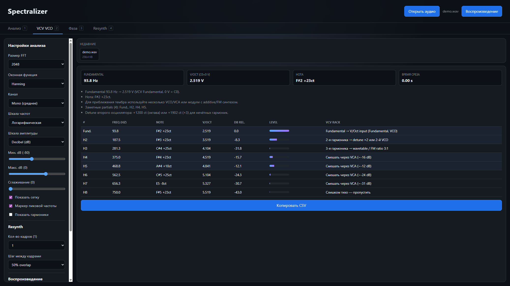
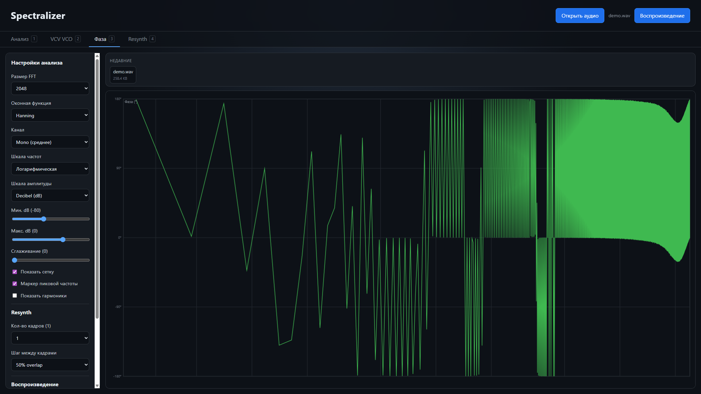
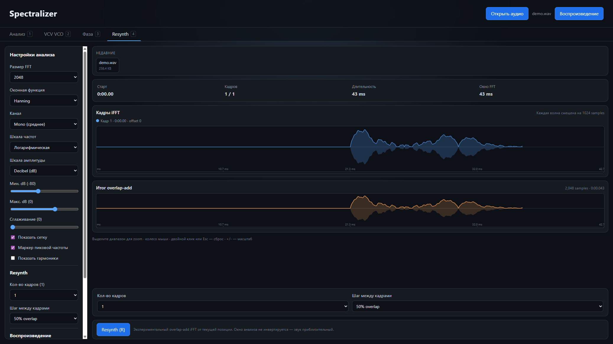

Spectralizer
Spectralizer
Electron · тот же движок, что в вебе
Desktop-приложение
Откройте MP3, WAV, FLAC или OGG. Спектр считается для выбранного момента на waveform и обновляется при воспроизведении. Звук никуда не уходит — всё локально. Та же логика доступна в браузере, без .exe.
Анализ
Magnitude spectrum, info-bar, zoom мышью, waveform и loop.

VCV VCO
Fundamental, V/Oct, нота и таблица partials с подсказками для Rack. CSV копируется в буфер.

Фаза
Фазовый спектр того же кадра FFT — удобно смотреть разрывы и окраску.

Resynth
Экспериментальный overlap-add iFFT от текущей позиции. Можно прослушать приближение кадра.

Настройки
FFT 256…8192, окна Rectangular / Hanning / Hamming / Blackman, канал mono/L/R, log или linear частота, dB или linear амплитуда, сглаживание, сетка, пик, гармоники.
Клавиши
| Клавиша | Действие |
|---|---|
| Space | Play / Pause |
| ← / → | Шаг по timeline (Shift — крупнее) |
| 1 / 2 / 3 / 4 | Анализ, VCO, Фаза, Resynth |
| Ctrl+O | Открыть файл |
| L / Shift+L | Loop / сброс loop |
| R | Resynth |
| Esc, +/− | Сброс zoom / масштаб |